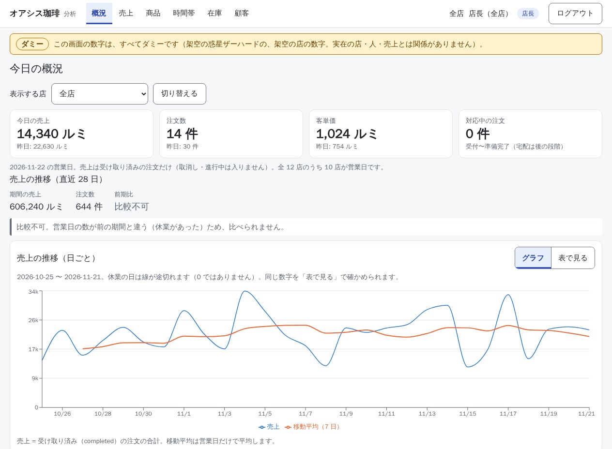
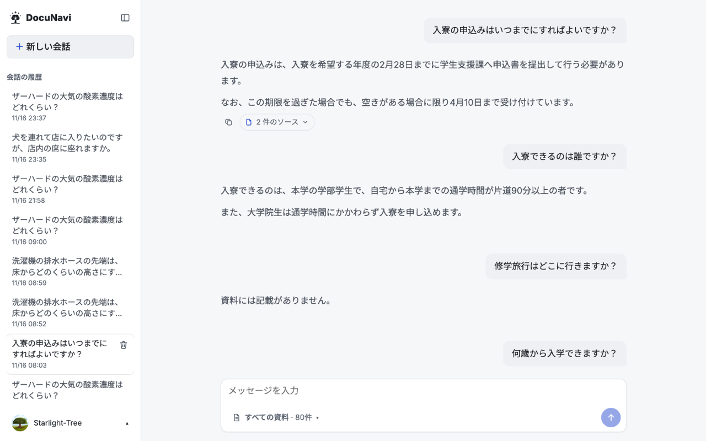
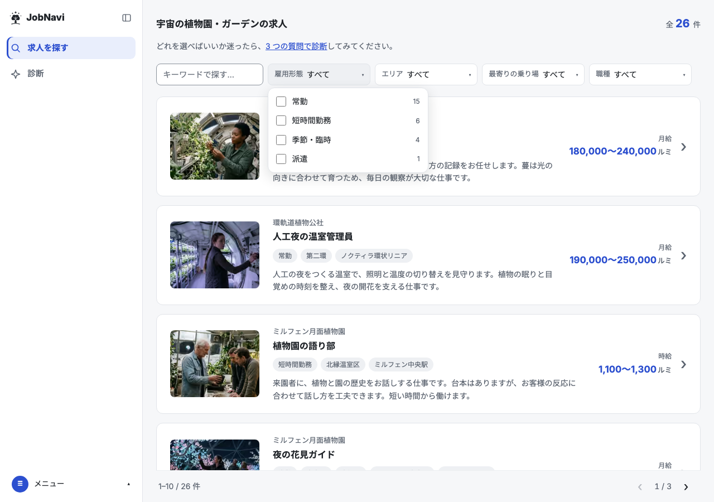

Starlight-Tree
English | 日本語FastAPI・Next.js・Postgres で Web アプリを作っています。画面から API・DB・テストまで一続きで作り、設計の判断は文書（ADR）に残しています。
作品
3 つとも、舞台は架空の世界（惑星ザーハード）のデモです。実在の店・人・文書は使っていません。
ShopOrder
架空のカフェチェーンの注文アプリです。お客様は店頭受け取りと宅配を注文し、店のスタッフは調理ボードと在庫を使い、店長は分析を見ます。在庫は追記だけの台帳で、同じ在庫を二重に売りません。


DocuNavi
PDF の文書から、出典つきで答える RAG チャットボットです。サンプル文書は架空です。

JobNavi
架空の惑星の植物園の求人サイトです。求人の検索と詳細の画面があります。
